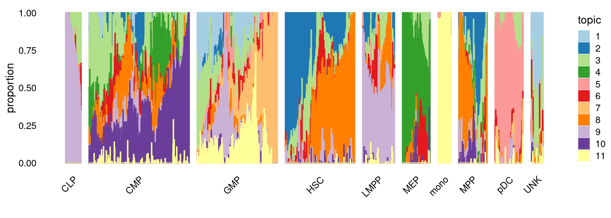
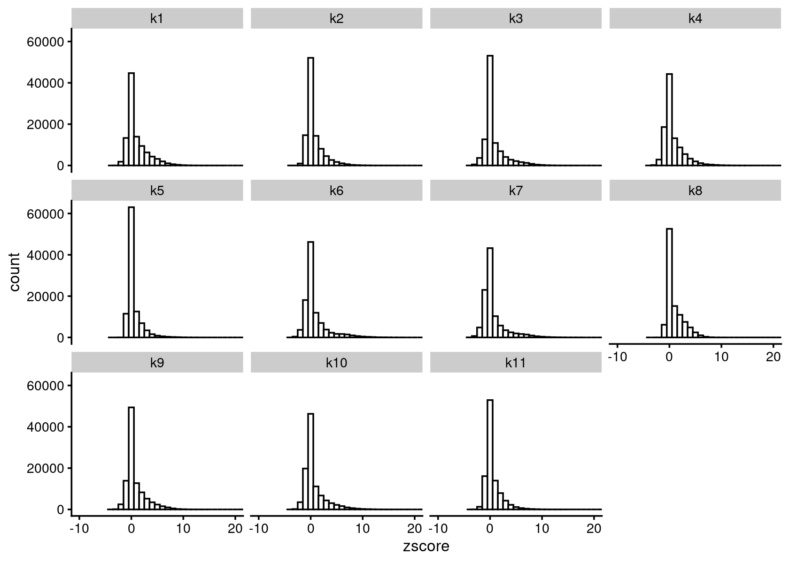

Last updated: 2020-12-23
Checks: 7 0
Knit directory: scATACseq-topics/
This reproducible R Markdown analysis was created with workflowr (version 1.6.2). The Checks tab describes the reproducibility checks that were applied when the results were created. The Past versions tab lists the development history.
Great! Since the R Markdown file has been committed to the Git repository, you know the exact version of the code that produced these results.
Great job! The global environment was empty. Objects defined in the global environment can affect the analysis in your R Markdown file in unknown ways. For reproduciblity it's best to always run the code in an empty environment.
The command set.seed(20200729) was run prior to running the code in the R Markdown file. Setting a seed ensures that any results that rely on randomness, e.g. subsampling or permutations, are reproducible.
Great job! Recording the operating system, R version, and package versions is critical for reproducibility.
Nice! There were no cached chunks for this analysis, so you can be confident that you successfully produced the results during this run.
Great job! Using relative paths to the files within your workflowr project makes it easier to run your code on other machines.
Great! You are using Git for version control. Tracking code development and connecting the code version to the results is critical for reproducibility.
The results in this page were generated with repository version 2886256. See the Past versions tab to see a history of the changes made to the R Markdown and HTML files.
Note that you need to be careful to ensure that all relevant files for the analysis have been committed to Git prior to generating the results (you can use wflow_publish or wflow_git_commit). workflowr only checks the R Markdown file, but you know if there are other scripts or data files that it depends on. Below is the status of the Git repository when the results were generated:
Ignored files:
Ignored: .Rhistory
Ignored: .Rproj.user/
Untracked files:
Untracked: analysis/clusters_pca_structure_Cusanovich2018.Rmd
Untracked: analysis/diff_count_Buenrostro2018_chomVAR_scPeaks.Rmd
Untracked: analysis/process_data_Buenrostro2018_Chen2019.Rmd
Untracked: analysis/single_cell_rnaseq_demo.Rmd
Untracked: buenrostro2018.RData
Untracked: output/clustering-Cusanovich2018.rds
Untracked: scripts/fit_all_models_Buenrostro_2018_chromVar_scPeaks_filtered.sbatch
Unstaged changes:
Modified: analysis/cisTopic_Buenrostro2018_chomVAR_scPeaks.Rmd
Modified: analysis/diff_count_Cusanovich2018.Rmd
Modified: analysis/plots_Lareau2019_bonemarrow.Rmd
Modified: analysis/process_data_Buenrostro2018.Rmd
Modified: code/gene_annotation.R
Modified: code/motif_analysis.R
Modified: code/plots.R
Modified: scripts/diffcount_motif_analysis.R
Modified: scripts/fit_all_models_Buenrostro_2018.sbatch
Modified: scripts/fit_cisTopic_Buenrostro_2018_chromVAR_scPeaks.sh
Modified: scripts/postfit_Buenrostro2018.sh
Modified: scripts/postfit_Cusanovich2018.sh
Modified: scripts/postfit_motif_analysis.sbatch
Note that any generated files, e.g. HTML, png, CSS, etc., are not included in this status report because it is ok for generated content to have uncommitted changes.
These are the previous versions of the repository in which changes were made to the R Markdown (analysis/motif_gene_analysis_Buenrostro2018_Chen2019pipeline.Rmd) and HTML (docs/motif_gene_analysis_Buenrostro2018_Chen2019pipeline.html) files. If you've configured a remote Git repository (see ?wflow_git_remote), click on the hyperlinks in the table below to view the files as they were in that past version.
| File | Version | Author | Date | Message |
|---|---|---|---|---|
| Rmd | 2886256 | kevinlkx | 2020-12-23 | motif and gene analysis for Buenrostro 2018 result with data processed using Chen 2019 pipeline |
Here we perform TF motif and gene analysis for the Buenrostro et al (2018) scATAC-seq result inferred from the multinomial topic model with \(k = 11\).
scATAC-seq data was processed using Chen et al (2019) pipeline.
library(Matrix)
library(dplyr)
library(ggplot2)
library(cowplot)
library(fastTopics)
library(dplyr)
library(tidyr)
library(DT)
library(reshape)Load the data. The counts are no longer needed at this stage of the analysis.
data.dir <- "/project2/mstephens/kevinluo/scATACseq-topics/data/Buenrostro_2018/processed_data_Chen2019pipeline/"
load(file.path(data.dir, "Buenrostro_2018_binarized_counts.RData"))Load the \(k = 13\) Poisson NMF fit results.
out.dir <- "/project2/mstephens/kevinluo/scATACseq-topics/output/Buenrostro_2018_Chen2019pipeline/binarized/"
fit <- readRDS(file.path(out.dir, "/fit-Buenrostro2018-binarized-scd-ex-k=11.rds"))$fit
fit_multinom <- poisson2multinom(fit)set.seed(10)
colors_topics <- c("#a6cee3","#1f78b4","#b2df8a","#33a02c","#fb9a99","#e31a1c",
"#fdbf6f","#ff7f00","#cab2d6","#6a3d9a","#ffff99","#b15928",
"gray")
samples$label <- as.factor(samples$label)
p.structure <- structure_plot(fit_multinom,
grouping = samples[, "label"],n = Inf,gap = 40,
perplexity = 50,topics = 1:11,colors = colors_topics,
num_threads = 4,verbose = FALSE)
# Perplexity automatically changed to 24 because original setting of 50 was too large for the number of samples (78)
# Perplexity automatically changed to 44 because original setting of 50 was too large for the number of samples (138)
# Perplexity automatically changed to 20 because original setting of 50 was too large for the number of samples (64)
# Perplexity automatically changed to 46 because original setting of 50 was too large for the number of samples (142)
# Perplexity automatically changed to 45 because original setting of 50 was too large for the number of samples (141)
# Perplexity automatically changed to 18 because original setting of 50 was too large for the number of samples (60)
print(p.structure)
diffcount_file <- file.path(out.dir, "diffcount-Buenrostro2018-11topics.rds")
if(file.exists(diffcount_file)){
cat("Load precomputed differential accessbility statistics.\n")
diff_count_topics <- readRDS(diffcount_file)
}else{
cat("Computing differential accessbility statistics from topic model.\n")
timing <- system.time(diff_count_topics <- diff_count_analysis(fit,counts))
cat(sprintf("Computation took %0.2f seconds.\n",timing["elapsed"]))
cat("Saving results.\n")
saveRDS(diff_count_topics, diffcount_file)
}
# Load precomputed differential accessbility statistics.Distribution of z-scores
zscore_topics <- melt(diff_count_topics$Z)
colnames(zscore_topics) <- c("region", "topic", "zscore")
levels(zscore_topics$topic) <- colnames(diff_count_topics$Z)
z.quantile.99 <- apply(abs(diff_count_topics$Z), 2, quantile, 0.99)
cat("z-score 99% quantile: \n")
print(z.quantile.99)
p.hist.zscores <- ggplot(zscore_topics, aes(x=zscore)) +
geom_histogram(binwidth=1, color="black", fill="white") +
coord_cartesian(xlim = c(-10, 20)) + theme_cowplot(font_size = 10) +
facet_wrap(~ topic, ncol=4)
print(p.hist.zscores)
# z-score 99% quantile:
# k1 k2 k3 k4 k5 k6 k7 k8
# 7.680613 7.226323 5.954049 10.059326 9.203917 5.821598 7.215842 8.156498
# k9 k10 k11
# 5.978363 6.684635 8.191629Details about HOMER motif analysis: http://homer.ucsd.edu/homer/motif/ http://homer.ucsd.edu/homer/ngs/peakMotifs.html
Motif enrichment result using regions with abs(z-score) above 99% quantile. RCC: /project2/mstephens/kevinluo/scATACseq-topics/output/Buenrostro_2018_Chen2019pipeline/binarized/motifanalysis-Buenrostro2018-k=11-quantile/
homer.dir <- paste0(out.dir, "/motifanalysis-Buenrostro2018-k=11-quantile/HOMER/quantile")
homer_res <- readRDS(file.path(homer.dir, "/homer_knownResults.rds"))
selected_regions <- readRDS(file.path(homer.dir, "/selected_regions.rds"))
cat("Number of regions selected for each topic: \n")
print(mapply(nrow, selected_regions[1:(length(selected_regions)-1)]))
top_motifs <- data.frame(matrix(nrow=10, ncol = ncol(diff_count_topics$Z)))
colnames(top_motifs) <- colnames(diff_count_topics$Z)
for (k in colnames(top_motifs)){
homer_motifs <- homer_res[[k]]
colnames(homer_motifs) <- c("Motif.name", "Consensus", "P-value", "Log.P-value", "q-value (Benjamini)",
"# of Target Sequences with Motif", "% of Target Sequences with Motif",
"# of Background Sequences with Motif", "% of Background Sequences with Motif")
homer_motifs <- homer_motifs %>% separate(Motif.name, c("motif", "experiment", "database"), "/")
top_motifs[,k] <- head(homer_motifs$motif, 10)
}
DT::datatable(data.frame(rank = 1:10, top_motifs), rownames = F,
caption = "Top 10 motifs enriched in each topic.")
# Number of regions selected for each topic:
# k1 k2 k3 k4 k5 k6 k7 k8 k9 k10 k11
# 1012 1012 1012 1012 1012 1012 1012 1012 1012 1012 1012Gene scores were computed using the gene score model (model 42) in the archR paper with some modifications. This model uses bi-directional exponential decays from the gene TSS (extended upstream by 5 kb by default) and the gene transcription termination site (TTS). Note: the current version of the function does not account for neighboring gene boundaries.
gene.dir <- paste0(out.dir, "/geneanalysis-Buenrostro2018-k=11-genebody-l2")
load(file.path(gene.dir, "genescores_gsea.Rdata"))
top_genes <- data.frame(matrix(nrow=10, ncol = ncol(gene_scores)))
colnames(top_genes) <- colnames(gene_scores)
rownames(gene_scores) <- genes[match(rownames(gene_scores), genes$ENSEMBL), "SYMBOL"]
for (k in colnames(top_genes)){
top_genes[,k] <- rownames(gene_scores)[head(order(abs(gene_scores[,k]), decreasing=TRUE), 10)]
}
DT::datatable(data.frame(rank = 1:10, top_genes), rownames = F,
caption = "Top 10 genes in each topic.")gene.dir <- paste0(out.dir, "/geneanalysis-Buenrostro2018-k=11-genebody-sum")
load(file.path(gene.dir, "genescores_gsea.Rdata"))
top_genes <- data.frame(matrix(nrow=10, ncol = ncol(gene_scores)))
colnames(top_genes) <- colnames(gene_scores)
rownames(gene_scores) <- genes[match(rownames(gene_scores), genes$ENSEMBL), "SYMBOL"]
for (k in colnames(top_genes)){
top_genes[,k] <- rownames(gene_scores)[head(order(abs(gene_scores[,k]), decreasing=TRUE), 10)]
}
DT::datatable(data.frame(rank = 1:10, top_genes), rownames = F,
caption = "Top 10 genes in each topic.")Gene scores were computed using TSS based method as in Lareau et al. Nature Biotech, 2019 as well as the model 21 in archR paper. This model weights chromatin accessibility around gene promoters by using bi-directional exponential decays from the TSS.
gene.dir <- paste0(out.dir, "/geneanalysis-Buenrostro2018-k=11-TSS-l2")
load(file.path(gene.dir, "genescores_gsea.Rdata"))
top_genes <- data.frame(matrix(nrow=10, ncol = ncol(gene_scores)))
colnames(top_genes) <- colnames(gene_scores)
rownames(gene_scores) <- genes[match(rownames(gene_scores), genes$ENSEMBL), "SYMBOL"]
for (k in colnames(top_genes)){
top_genes[,k] <- rownames(gene_scores)[head(order(abs(gene_scores[,k]), decreasing=TRUE), 10)]
}
DT::datatable(data.frame(rank = 1:10, top_genes), rownames = F,
caption = "Top 10 genes in each topic.")gene.dir <- paste0(out.dir, "/geneanalysis-Buenrostro2018-k=11-TSS-sum")
load(file.path(gene.dir, "genescores_gsea.Rdata"))
top_genes <- data.frame(matrix(nrow=10, ncol = ncol(gene_scores)))
colnames(top_genes) <- colnames(gene_scores)
rownames(gene_scores) <- genes[match(rownames(gene_scores), genes$ENSEMBL), "SYMBOL"]
for (k in colnames(top_genes)){
top_genes[,k] <- rownames(gene_scores)[head(order(abs(gene_scores[,k]), decreasing=TRUE), 10)]
}
DT::datatable(data.frame(rank = 1:10, top_genes), rownames = F,
caption = "Top 10 genes in each topic.")gene.dir <- paste0(out.dir, "/geneanalysis-Buenrostro2018-k=11-genebody-l2")
load(file.path(gene.dir, "genescores_gsea.Rdata"))
top_pathways_up <- top_pathways_down <- data.frame(matrix(nrow=10, ncol = ncol(gsea_res$pval)))
colnames(top_pathways_up) <- colnames(top_pathways_down) <- colnames(gsea_res$pval)
for (k in 1:ncol(gsea_res$pval)){
gsea_topic <- data.frame(pathway = rownames(gsea_res$pval),
pval = gsea_res$pval[,k],
log2err = gsea_res$log2err[,k],
ES = gsea_res$ES[,k],
NES = gsea_res$NES[,k])
gsea_up <- gsea_topic[gsea_topic$ES > 0,]
top_IDs_up <- as.character(gsea_up[head(order(gsea_up$pval), 10), "pathway"])
top_pathways_up[,k] <- gene_set_info[match(top_IDs_up, gene_set_info$id),c("name", "id")] %>%
unite("pathway", c("name", "id"), sep = ".", remove = TRUE)
gsea_down <- gsea_topic[gsea_topic$ES < 0,]
top_IDs_down <- as.character(gsea_down[head(order(gsea_down$pval), 10), "pathway"])
top_pathways_down[,k] <- gene_set_info[match(top_IDs_down, gene_set_info$id),c("name", "id")] %>%
unite("pathway", c("name", "id"), sep = ".", remove = TRUE)
}
DT::datatable(data.frame(rank = 1:10, top_pathways_up), rownames = F,
caption = "Top 10 pathways enriched at the top of the gene rank list.")gene.dir <- paste0(out.dir, "/geneanalysis-Buenrostro2018-k=11-genebody-sum")
load(file.path(gene.dir, "genescores_gsea.Rdata"))
top_pathways_up <- top_pathways_down <- data.frame(matrix(nrow=10, ncol = ncol(gsea_res$pval)))
colnames(top_pathways_up) <- colnames(top_pathways_down) <- colnames(gsea_res$pval)
for (k in 1:ncol(gsea_res$pval)){
gsea_topic <- data.frame(pathway = rownames(gsea_res$pval),
pval = gsea_res$pval[,k],
log2err = gsea_res$log2err[,k],
ES = gsea_res$ES[,k],
NES = gsea_res$NES[,k])
gsea_up <- gsea_topic[gsea_topic$ES > 0,]
top_IDs_up <- as.character(gsea_up[head(order(gsea_up$pval), 10), "pathway"])
top_pathways_up[,k] <- gene_set_info[match(top_IDs_up, gene_set_info$id),c("name", "id")] %>%
unite("pathway", c("name", "id"), sep = ".", remove = TRUE)
gsea_down <- gsea_topic[gsea_topic$ES < 0,]
top_IDs_down <- as.character(gsea_down[head(order(gsea_down$pval), 10), "pathway"])
top_pathways_down[,k] <- gene_set_info[match(top_IDs_down, gene_set_info$id),c("name", "id")] %>%
unite("pathway", c("name", "id"), sep = ".", remove = TRUE)
}
DT::datatable(data.frame(rank = 1:10, top_pathways_up), rownames = F,
caption = "Top 10 pathways enriched at the top of the gene rank list.")gene.dir <- paste0(out.dir, "/geneanalysis-Buenrostro2018-k=11-TSS-l2")
load(file.path(gene.dir, "genescores_gsea.Rdata"))
top_pathways_up <- top_pathways_down <- data.frame(matrix(nrow=10, ncol = ncol(gsea_res$pval)))
colnames(top_pathways_up) <- colnames(top_pathways_down) <- colnames(gsea_res$pval)
for (k in 1:ncol(gsea_res$pval)){
gsea_topic <- data.frame(pathway = rownames(gsea_res$pval),
pval = gsea_res$pval[,k],
log2err = gsea_res$log2err[,k],
ES = gsea_res$ES[,k],
NES = gsea_res$NES[,k])
gsea_up <- gsea_topic[gsea_topic$ES > 0,]
top_IDs_up <- as.character(gsea_up[head(order(gsea_up$pval), 10), "pathway"])
top_IDs_up <- gene_set_info[match(top_IDs_up, gene_set_info$id),c("name", "id")]
top_pathways_up[,k] <- paste0(top_IDs_up$name, "(", top_IDs_up$id, ")")
gsea_down <- gsea_topic[gsea_topic$ES < 0,]
top_IDs_down <- as.character(gsea_down[head(order(gsea_down$pval), 10), "pathway"])
top_IDs_down <- gene_set_info[match(top_IDs_down, gene_set_info$id),c("name", "id")]
top_pathways_down[,k] <- paste0(top_IDs_down$name, "(", top_IDs_down$id, ")")
}
DT::datatable(data.frame(rank = 1:10, top_pathways_up), rownames = F,
caption = "Top 10 pathways enriched at the top of the gene rank list.")gene.dir <- paste0(out.dir, "/geneanalysis-Buenrostro2018-k=11-TSS-sum")
load(file.path(gene.dir, "genescores_gsea.Rdata"))
top_pathways_up <- top_pathways_down <- data.frame(matrix(nrow=10, ncol = ncol(gsea_res$pval)))
colnames(top_pathways_up) <- colnames(top_pathways_down) <- colnames(gsea_res$pval)
for (k in 1:ncol(gsea_res$pval)){
gsea_topic <- data.frame(pathway = rownames(gsea_res$pval),
pval = gsea_res$pval[,k],
log2err = gsea_res$log2err[,k],
ES = gsea_res$ES[,k],
NES = gsea_res$NES[,k])
gsea_up <- gsea_topic[gsea_topic$ES > 0,]
top_IDs_up <- as.character(gsea_up[head(order(gsea_up$pval), 10), "pathway"])
top_IDs_up <- gene_set_info[match(top_IDs_up, gene_set_info$id),c("name", "id")]
top_pathways_up[,k] <- paste0(top_IDs_up$name, "(", top_IDs_up$id, ")")
gsea_down <- gsea_topic[gsea_topic$ES < 0,]
top_IDs_down <- as.character(gsea_down[head(order(gsea_down$pval), 10), "pathway"])
top_IDs_down <- gene_set_info[match(top_IDs_down, gene_set_info$id),c("name", "id")]
top_pathways_down[,k] <- paste0(top_IDs_down$name, "(", top_IDs_down$id, ")")
}
DT::datatable(data.frame(rank = 1:10, top_pathways_up), rownames = F,
caption = "Top 10 pathways enriched at the top of the gene rank list.")
sessionInfo()
# R version 3.6.1 (2019-07-05)
# Platform: x86_64-pc-linux-gnu (64-bit)
# Running under: Scientific Linux 7.4 (Nitrogen)
#
# Matrix products: default
# BLAS/LAPACK: /software/openblas-0.2.19-el7-x86_64/lib/libopenblas_haswellp-r0.2.19.so
#
# locale:
# [1] LC_CTYPE=en_US.UTF-8 LC_NUMERIC=C
# [3] LC_TIME=en_US.UTF-8 LC_COLLATE=en_US.UTF-8
# [5] LC_MONETARY=en_US.UTF-8 LC_MESSAGES=en_US.UTF-8
# [7] LC_PAPER=en_US.UTF-8 LC_NAME=C
# [9] LC_ADDRESS=C LC_TELEPHONE=C
# [11] LC_MEASUREMENT=en_US.UTF-8 LC_IDENTIFICATION=C
#
# attached base packages:
# [1] stats graphics grDevices utils datasets methods base
#
# other attached packages:
# [1] reshape_0.8.8 DT_0.16 tidyr_1.1.2 fastTopics_0.4-6
# [5] cowplot_1.1.0 ggplot2_3.3.2 dplyr_1.0.2 Matrix_1.2-18
#
# loaded via a namespace (and not attached):
# [1] ggrepel_0.9.0 Rcpp_1.0.5 lattice_0.20-41 prettyunits_1.1.1
# [5] rprojroot_2.0.2 digest_0.6.27 plyr_1.8.6 R6_2.5.0
# [9] MatrixModels_0.4-1 evaluate_0.14 coda_0.19-4 httr_1.4.2
# [13] pillar_1.4.7 rlang_0.4.9 progress_1.2.2 lazyeval_0.2.2
# [17] data.table_1.13.4 irlba_2.3.3 SparseM_1.78 whisker_0.4
# [21] rmarkdown_2.6 labeling_0.4.2 Rtsne_0.15 stringr_1.4.0
# [25] htmlwidgets_1.5.3 munsell_0.5.0 compiler_3.6.1 httpuv_1.5.4
# [29] xfun_0.19 pkgconfig_2.0.3 mcmc_0.9-7 htmltools_0.5.0
# [33] tidyselect_1.1.0 tibble_3.0.4 workflowr_1.6.2 quadprog_1.5-8
# [37] matrixStats_0.57.0 viridisLite_0.3.0 crayon_1.3.4 conquer_1.0.2
# [41] withr_2.3.0 later_1.1.0.1 MASS_7.3-53 grid_3.6.1
# [45] jsonlite_1.7.2 gtable_0.3.0 lifecycle_0.2.0 git2r_0.27.1
# [49] magrittr_2.0.1 scales_1.1.1 RcppParallel_5.0.2 stringi_1.5.3
# [53] farver_2.0.3 fs_1.3.1 promises_1.1.1 ellipsis_0.3.1
# [57] generics_0.1.0 vctrs_0.3.6 tools_3.6.1 glue_1.4.2
# [61] purrr_0.3.4 crosstalk_1.1.0.1 hms_0.5.3 yaml_2.2.1
# [65] colorspace_2.0-0 plotly_4.9.2.1 knitr_1.30 quantreg_5.75
# [69] MCMCpack_1.4-9